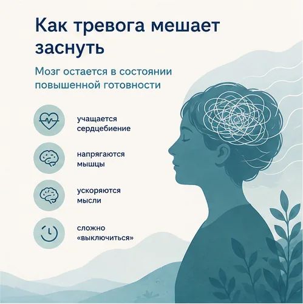
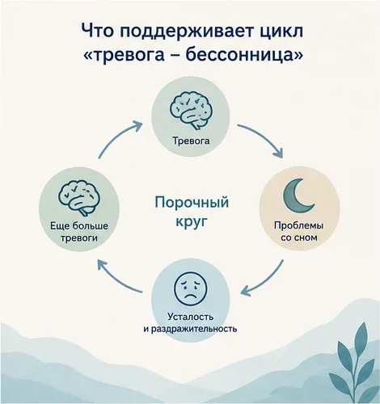
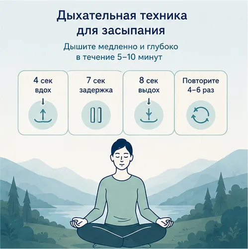
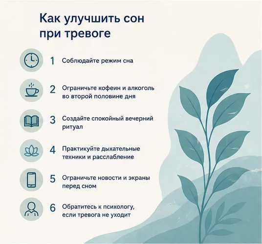

Главная → Блог → Бессонница при тревоге
Бессонница при тревоге: почему не спится и что делать
Обновлено: 21.08.2026 · 9 минут чтения

Лежите в кровати, а мысли крутятся по кругу, и сон не приходит? Это классическая тревожная бессонница. Если не получается уснуть за 15–20 минут — не заставляйте себя. Встаньте, при тусклом свете займитесь чем-то спокойным и вернитесь в постель, только когда появится сонливость. А ниже разберём, почему тревога ворует сон и что помогает наладить его в долгую.
Этот материал — часть полного гида по тревоге: там карта всех состояний и материалов.
Почему тревога мешает спать
Чтобы заснуть, нервной системе нужно перейти в режим покоя. Тревога делает ровно обратное: она держит организм в состоянии «бей или беги». Учащается пульс, напрягаются мышцы, в кровь поступают гормоны стресса — и тело физически не готово отключиться, даже если вы валитесь с ног от усталости.
Вечером к этому добавляется ещё один фактор. Днём нас отвлекают дела, а в тишине перед сном тревожные мысли наконец «получают сцену»: всплывают незакрытые задачи, разговоры, сценарии «а вдруг». Мозг воспринимает это прокручивание как сигнал угрозы и взбадривается ещё сильнее. Получается парадокс: чем больше вы хотите уснуть, тем меньше получается.
Усиливают тревожную бессонницу и бытовые вещи: кофеин во второй половине дня, алкоголь «чтобы расслабиться», яркий экран телефона перед сном, нерегулярный режим и привычка работать или решать проблемы прямо в кровати.

Замкнутый круг тревоги и бессонницы
Тревога и бессонница подпитывают друг друга. Из-за тревоги вы плохо спите, а недосып, в свою очередь, снижает способность мозга регулировать эмоции — и на следующий день тревожность становится сильнее. Круг замыкается.
Это очень распространённая проблема: по оценкам исследователей, хотя бы периодически с симптомами бессонницы сталкивается до трети взрослых, а при тревожных расстройствах нарушения сна встречаются ещё чаще. Так что если вы не одни такие — вы действительно не одни.

Важно понять главное: одна-две плохие ночи никому не вредят. Организм умеет навёрстывать сон, и даже после бессонной ночи вы способны нормально функционировать. Именно страх не выспаться — «если я сейчас не усну, завтра всё развалится» — часто и есть то, что окончательно прогоняет сон.
Поэтому работа с тревожной бессонницей идёт в две стороны: снизить тревогу как таковую (об этом — в статье «как справиться с тревогой») и убрать привычки, которые мешают сну. Начнём с того, что можно сделать сегодня ночью.
Что сделать прямо сейчас, чтобы уснуть
Если вы читаете это ночью и не можете заснуть — вот короткий алгоритм. Он не «выключит» голову мгновенно, но поможет выйти из напряжения.
- Перестаньте бороться за сон. Скажите себе: «Мне не обязательно спать прямо сейчас, достаточно просто отдыхать». Снятие требования уснуть само по себе снижает напряжение.
- Замедлите дыхание. Вдох через нос на счёт 4, медленный выдох через рот на счёт 8. Длинный выдох переключает нервную систему в режим покоя. Сделайте 5–10 циклов.
- Не смотрите на часы. Подсчёт «осталось всего 5 часов сна» только раскручивает тревогу. Отвернитесь от циферблата или уберите телефон.
- Правило 20 минут. Если не спится дольше 20 минут, встаньте. Уйдите в другую комнату, при тусклом свете займитесь чем-то спокойным (почитайте бумажную книгу) и вернитесь в постель, только когда потянет в сон.
Замедлить дыхание помогает простая схема: вдох — короткая задержка — длинный выдох. Не гонитесь за идеальным счётом, важнее ровный, спокойный ритм.

Если тревога ночью переходит в резкий приступ с сердцебиением и нехваткой воздуха — это может быть ночная паническая атака. Она пугает, но не опасна, и проходит за минуты.
Не можете уснуть и хочется выговориться? Поговорите с ИИ-психологом — тепло, анонимно, в любое время суток, без осуждения и записи.
Начать разговор бесплатноЧастые ночные сценарии тревоги
Тревожная бессонница у всех выглядит немного по-разному. Вот самые частые ситуации и что за ними стоит.
Почему ночью тревога сильнее
Ночью нет привычных отвлечений — работы, разговоров, дел, — и мозгу «нечем заняться», кроме как прокручивать тревожные мысли. К этому добавляются усталость, тишина и темнота, на фоне которых любая мысль кажется крупнее и страшнее. Это не значит, что проблемы реально серьёзнее, — просто ночью у вас меньше ресурса, чтобы их обесценить. Утром те же мысли часто выглядят гораздо безобиднее.
Просыпаюсь в 3–4 часа ночи от тревоги
Раннее пробуждение под утро — очень типичная жалоба. К утру сон становится более поверхностным, снижается уровень глюкозы и меняется гормональный фон, поэтому мозг легче «цепляется» за тревогу. Само по себе пробуждение не опасно. Замкнутый круг запускается дальше: вы смотрите на часы, считаете, сколько осталось до будильника, и тревога окончательно прогоняет сон. Главное правило — не смотреть на время, не хвататься за телефон и применить дыхание или правило 20 минут из алгоритма выше.
Сердце колотится и не даёт уснуть
Учащённое сердцебиение в постели — это телесное проявление тревоги, а не признак болезни сердца (хотя при регулярных эпизодах стоит показаться врачу). Тело в режиме «бей или беги», и пульс ускоряется. Лучший ответ — длинный выдох: вдох на счёт 4, выдох на счёт 8. Если к сердцебиению добавляется резкий страх и нехватка воздуха с пиком за несколько минут — это, скорее всего, паническая атака, и она тоже не опасна.
Сколько длится тревожная бессонница
Если бессонница вызвана конкретным стрессом (экзамен, переезд, сложный период), она обычно проходит за несколько дней или недель — когда ситуация разрешается или вы к ней адаптируетесь. О хронической бессоннице говорят, когда проблемы со сном держатся дольше трёх месяцев и повторяются от трёх раз в неделю. Сама по себе она проходит редко — и здесь как раз помогает КПТ-бессонницы (см. ниже). Если же к бессоннице добавились постоянное истощение и потеря интереса к работе, причиной может быть эмоциональное выгорание.
Гигиена сна: 8 правил
«Гигиена сна» — это привычки, которые настраивают организм на нормальный сон. По отдельности каждая мелочь кажется незначительной, но вместе они дают заметный эффект, особенно при тревожной бессоннице.

- Стабильное время подъёма. Вставайте примерно в одно и то же время даже в выходные. Это главный якорь для внутренних часов — важнее, чем время отхода ко сну.
- Кровать только для сна. Не работайте, не ешьте и не листайте ленту в постели. Так мозг перестаёт ассоциировать кровать с бодрствованием и тревогой.
- Меньше экранов за час до сна. Яркий свет телефона подавляет мелатонин и держит мозг в тонусе. Замените скроллинг на спокойный ритуал.
- Кофеин — до обеда. Кофе, крепкий чай, энергетики и даже кола во второй половине дня могут мешать заснуть спустя много часов.
- Без алкоголя на ночь. Он помогает отключиться, но делает сон поверхностным и часто будит под утро в тревоге.
- Прохладная тёмная спальня. Оптимально около 18–20 °C, плотные шторы, тишина. Тело засыпает легче, когда слегка остывает.
- «Тревожный блокнот». За пару часов до сна выпишите на бумагу всё, что крутится в голове, и набросайте план на завтра. Так мысли не придётся «держать» ночью.
- Расслабляющий ритуал. Тёплый душ, мягкий свет, дыхание или растяжка — повторяющиеся действия становятся для мозга сигналом «пора спать».
КПТ-бессонницы: что работает в долгую
Если бессонница держится неделями, доказательный метод первого выбора — это когнитивно-поведенческая терапия бессонницы (КПТ-И). По эффективности при хронической бессоннице она не уступает снотворным, а результат держится дольше и без побочных эффектов.
В основе — та же логика КПТ: наши мысли, эмоции и поведение связаны между собой. Меняя мысли о сне («если не высплюсь — катастрофа») и поведение вокруг него, мы влияем на сам сон.

Кратко, что лежит в основе метода — и что мешает сну, если делать наоборот:
| Помогает спать | Мешает спать |
|---|---|
| Ложиться, только когда действительно хочется спать | Уходить в кровать «про запас», заставляя себя уснуть |
| Вставать, если не спится дольше 20 минут | Часами лежать в напряжении, ворочаясь |
| Одно и то же время подъёма каждый день | Отсыпаться днём и в выходные «за всю неделю» |
| Относиться к плохой ночи спокойно | Подсчитывать часы сна и бояться не выспаться |
Эти принципы можно применять и самостоятельно. Но если бессонница затянулась, с КПТ-И эффективнее работать вместе со специалистом — он поможет подобрать режим под вас и не сорваться.
ИИ-психолог может помочь заметить тревожные мысли о сне и мягко применить техники КПТ прямо перед сном — попробовать можно бесплатно и анонимно.
Когда обратиться к врачу
Эпизодические плохие ночи бывают у всех, и сами по себе они не требуют лечения. Но есть сигналы, при которых стоит обратиться к врачу или психотерапевту:
- проблемы со сном держатся дольше месяца и повторяются три и более раз в неделю;
- недосып заметно мешает работать, водить машину, общаться;
- вы засыпаете нормально, но громко храпите и просыпаетесь разбитым (возможно апноэ сна);
- тревога высокая и днём, случаются панические атаки;
- появляются подавленность и мысли о том, что не хочется жить.
Тревожные расстройства и хроническая бессонница хорошо поддаются терапии, и с ними можно справиться — обращаться за помощью не стыдно, а разумно.
Частые вопросы
Как быстро уснуть при тревоге?
Сначала замедлите дыхание: вдох на счёт 4, медленный выдох на счёт 8 — длинный выдох успокаивает нервную систему. Если не получается уснуть за 20 минут, встаньте, уйдите в другую комнату при тусклом свете и займитесь чем-то спокойным, пока не появится сонливость. Не лежите в кровати, заставляя себя спать, — это только усиливает тревогу.
Почему я просыпаюсь ночью в тревоге около 3–4 утра?
Под утро снижается уровень глюкозы и меняется гормональный фон, поэтому мозг легче «цепляется» за тревожные мысли, а сон в это время более поверхностный. Само пробуждение не опасно. Проблема начинается, когда вы смотрите на часы, считаете оставшиеся часы сна и раскручиваете тревогу. Помогает не смотреть на время, замедлить дыхание и при необходимости встать, а не лежать в напряжении.
Помогает ли мелатонин при тревожной бессоннице?
Мелатонин помогает в основном при сбитом ритме сна — например, после смены часовых поясов или ночных смен. При тревожной бессоннице, когда заснуть мешают мысли и напряжение, его эффект обычно небольшой. Любые препараты, включая снотворные, стоит принимать только по согласованию с врачом, а не назначать себе самостоятельно.
Сколько часов сна нужно человеку?
Большинству взрослых нужно 7–9 часов сна, но норма индивидуальна. Важнее не точная цифра, а как вы чувствуете себя днём: если есть силы и ясность, сна достаточно. Стремление «обязательно проспать 8 часов» само по себе усиливает тревогу и мешает заснуть, поэтому зацикливаться на цифрах не стоит.
Может ли тревога вызывать бессонницу каждый день?
Да, при высокой постоянной тревоге плохой сон может стать почти ежедневным — особенно когда добавляется страх не уснуть, который сам по себе мешает заснуть. Если бессонница держится дольше трёх месяцев и повторяется от трёх раз в неделю, это уже хроническая форма, и с ней стоит обратиться к специалисту. Хорошая новость в том, что тревожная бессонница хорошо поддаётся работе — и с тревогой, и со сном.
Стоит ли пить снотворное при тревоге?
Снотворные могут дать краткий эффект, но не лечат причину, а при длительном приёме вызывают привыкание, поэтому назначать их себе самостоятельно не стоит. Международные рекомендации советуют при хронической бессоннице сначала пробовать не таблетки, а когнитивно-поведенческую терапию бессонницы (КПТ-И). Любые препараты — только по назначению врача.
Почему хочется спать, но не получается уснуть?
Чаще всего тело устало, но нервная система всё ещё «на взводе» из-за тревоги: мозг в режиме повышенной готовности не даёт переключиться в сон. Сонливость и способность заснуть — это разные состояния. Помогает не заставлять себя спать силой, а снизить возбуждение: замедлить дыхание, убрать экраны и яркий свет, дать телу немного остыть.
Читать также
- Как справиться с тревогой: 8 техник, которые реально помогают — работа с тревогой, которая и мешает спать.
- Паническая атака: что делать в момент приступа — если ночью накрывает резким приступом страха.
- Навязчивые мысли: почему появляются и 7 способов их остановить — когда перед сном голова прокручивает одно и то же.
- Апатия: почему нет сил и ничего не хочется — и что делать — если недосып перерос в постоянный упадок сил.
- Осенняя депрессия: почему накрывает осенью и 8 способов справиться — если сон и настроение портятся каждый год с наступлением темноты.
- Эмоциональное выгорание: 5 стадий, признаки и как восстановиться — когда бессонница идёт вместе с истощением.
Помогает ли алкоголь уснуть при тревоге?
Заснуть — помогает, выспаться — нет. Алкоголь ускоряет засыпание, но во второй половине ночи, когда он перерабатывается, сон становится поверхностным и рваным, а под утро добавляется откат с усиленной тревогой. Получается замкнутый круг: выпил, чтобы уснуть, — проснулся тревожнее, чем был. При регулярном употреблении для сна тревога в среднем растёт, а не снижается.
Материал подготовлен командой AI Therapist и основан на доказательных подходах — когнитивно-поведенческой терапии бессонницы (КПТ-И), КПТ и практиках осознанности (Mindfulness). Статья носит просветительский характер и не заменяет консультацию специалиста.
Источник: Национальная служба здравоохранения Великобритании (NHS) — бессонница.
Кто отвечает за содержание сайта и по каким правилам мы готовим материалы — на странице о проекте.